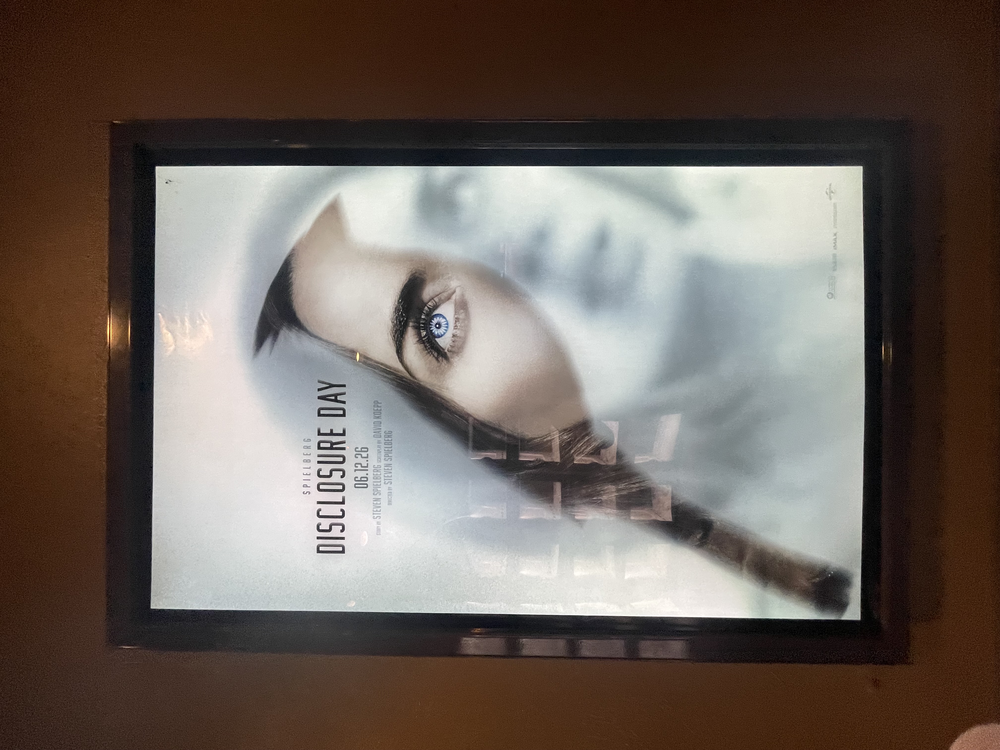

Disclosure Day (2026) Theater Review
On June 15th, I went to see Steven Spielberg's latest science fiction film at my local movie theater. "Disclosure Day" is a science fiction action film about a decade's long coverup of research of extraterrestrial life. It stars Emily Blunt, Josh O'Connor, Colman Domingo, Colin Firth, Eve Hewson, and Wyatt Russell. This is Steven Spielberg's fifth film centering on extraterrestrials, following "Close Encounters of the Third Kind", "E.T. The Extra Terrestrial", "War of the Worlds", and "Indiana Jones and the Kingdom of the Crystal Skull." I was very excited for this movie due to me being a big Steven Spielberg fan, as well as being a fan of Emily Blunt, Josh O'Connor, and Wyatt Russell. And I can say that this movie definetly rocked. Though it was over 2 and a half hours, I felt that it was never boring and consistantly interesting. It was a very well shot movie with great action, and a great musical score by John Williams (his first score since 2023's "Indiana Jones and the Dial of Destiny"). I thought this film was a very thought provoking movie about humanity. I have heard many people not liking this movie, and I understand why (somewhat), but I think that is because they had different expectations. I feel that people will be discussing this movie for years to come.Techincal thoughts
I saw this movie in a 2K laser digital showing, with Dolby Atmos sound. This movie was shot on 35mm film by longtime Spielberg collaborator Janusz Kamiński. It has a 4K digital intermediate, though I only viewed the film in 2K with standard dynamic range. The picture quality was very good. It had a very filmic image with fine grain, and was a very healthy image throughout. The visual effects blend in perfectly, and many stand out, especially the scene with the crop circles. I am very interested to see how this movie would look in it's native 4K resolution with high dynamic range. The Dolby Atmos sound was incredible. It was a loud, full, and immersive experience. I was excited to see the height channels being used after seeing a few movies (Zootopia 2, Superman) that barely used them at all. John Williams' score is enveloping and masterful. I would definetly recommend seeing this film with Dolby Atmos sound if you can.Final Verdict
Disclosure Day is a fantasic film from a master at the top of his craft. I would reccommend seeing it if you like thought provoking science fiction action movies. I would say it is most similar to Spielberg's "Minority Report". It can be a bit overwhelming at times, but never for too long. I would have to give this movie expirience a rating of 5 out of 5 stars.